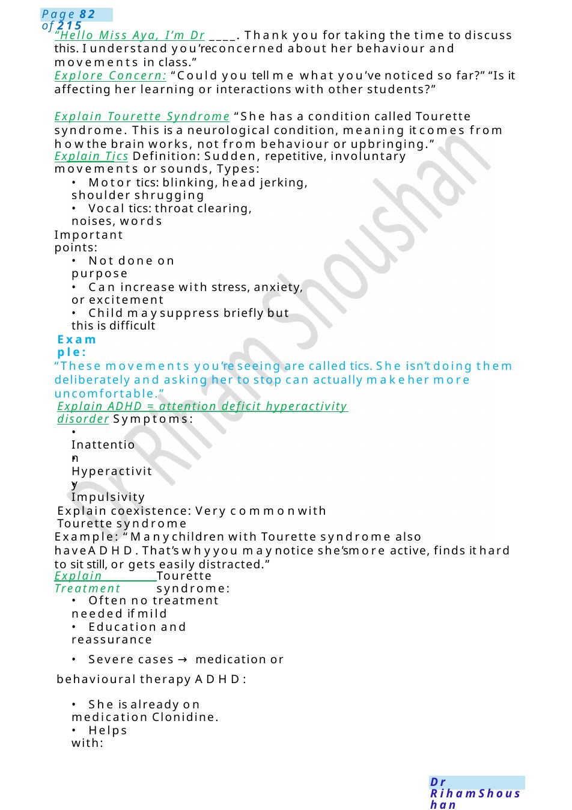
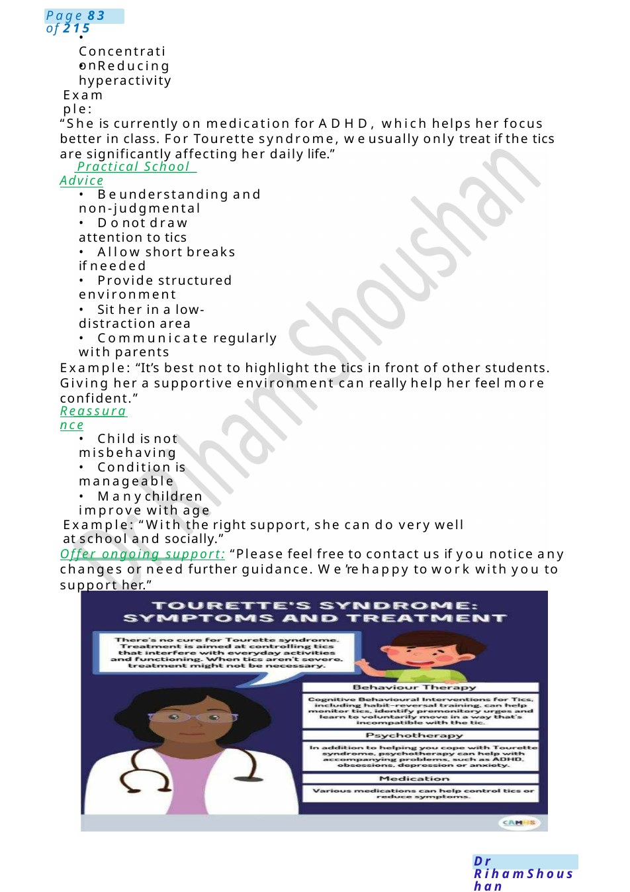

Tourette Syndrome &ADHD
Drawgrowth chart for HCand explain the meaning of 9th centile. Developmental delay is a failure to achieve developmental milestones when compared to similar- aged peers. Delay is known as 'global' if two or more developmental domains are affected in a child under the age of five.
Scenario Summary
Drawgrowth chart for HCand explain the meaning of 9th centile. Developmental delay is a failure to achieve developmental milestones when compared to similar- aged peers. Delay is known as 'global' if two or more developmental domains are affected in a child under the age of five.
Full Original Scenario

Tourette Syndrome&ADHD
Drawgrowth chart for HCand explain the meaning of 9th centile.
Developmental delay is a failure to achieve developmental milestones when compared to similar- aged peers. Delay is known as 'global' if two or more developmental domains are affected in a child under the age of five.
Causes: Weneed to search for the causes; it can be as he was born early, genetic causes, neonatal infection, metabolic, syndromic child. Wewill do some imaging for his brain, body, blood tests, we also will assess his vision and hearing.
Management: We need to involve a group of teams, a developmental paediatrician, who is a specialized doctor in developmental aspects in children. as he only does sit with support& transfer objects from hand to hand, however he should sit alone and grasp the cube with pincer grip.
Treatments for developmental delays vary according to the specific delay. Some treatments include physical therapy for help with motor skill delays, and behavioral and educational therapy for help with ASDand other delays. In some cases, medications maybe prescribed.
Also, occupational therapist to do improve his daily tasks &implement some tools &modifications for his condition at home and other places. physiotherapist, Genetic, metabolic team doctor, SALT, neurologist if needed, other team acc to the output from the tests and team.
Prognosis& education: Most children with GDDcontinue to have difficulties as they get older. Children are often diagnosed with learning difficulties/disabilities when they start school. Please make sure you speak to the SENCOat your child’s school if you have concerns about your child’ssupport/ progress.
Advice: regular follow-up with team, homemodification, regular exercises and practicing talking and playing with him, we will give you some picture cards or stories about social situations can teach children social skills. Parent support group.
Setting: School meeting / clinic discussion Candidate role: Paediatric doctor other actor: Miss Aya (secondary school teacher)
Candidate Instructions (what you see in exam) Youare a paediatric doctor. Miss Aya, a secondary school teacher, is concerned about a 13-year-old girl in her class who:• Is hyperactive • Hasabnormal movements
The child has been diagnosed with: • Tourette syndrome • ADHD
Your task: • Explain: • Tourette syndrome • Tics • ADHDand whythey occur together • Treatment • Address her concerns • Provide advice for school support
Actor (Miss Aya) Brief • You are worried the child: • Is disruptive • Makes strange movements and noises • Youmaythink: • “Is she doing this on purpose?” • “Should I discipline her?” • Youwant:
- Clear explanation • How to manage her in class
If not addressed, ask: • “Can she control these movements?” • “Is this a behavioural problem?” • “What should I do when it happens in class?”

“Hello Miss Aya, I’m Dr ____. Thank you for taking the time to discuss this. I understand you’reconcerned about her behaviour and movements in class.”
Explore Concern: “Could you tell me what you’ve noticed so far?” “Is it affecting her learning or interactions with other students?”
Explain Tourette Syndrome “She has a condition called Tourette syndrome. This is a neurological condition, meaning it comes from howthe brain works, not from behaviour or upbringing.”
Explain Tics Definition: Sudden, repetitive, involuntary movements or sounds, Types:
- Motor tics: blinking, head jerking, shoulder shrugging
- Vocal tics: throat clearing, noises, words
Important points:
- Not done on purpose
- Can increase with stress, anxiety, or excitement
- Child maysuppress briefly but this is difficult
Example:
“These movements you’re seeing are called tics. She isn’t doing them deliberately and asking her to stop can actually makeher more uncomfortable.”
Explain ADHD = attention deficit hyperactivity disorder Symptoms:
- Inattention
- Hyperactivity
- Impulsivity
Explain coexistence: Very commonwith Tourette syndrome
Example: “Manychildren with Tourette syndrome also haveADHD.That’s whyyou maynotice she’smore active, finds it hard to sit still, or gets easily distracted.”
Explain Treatment
Tourette syndrome:
- Often no treatment needed if mild
- Education and reassurance
- Severe cases →medication or behavioural therapy ADHD:
- She is already on medication Clonidine.
- Helps with:

- Concentration
- Reducing hyperactivity
Example:
“She is currently on medication for ADHD, which helps her focus better in class. For Tourette syndrome, weusually only treat if the tics are significantly affecting her daily life.”
Practical School Advice
- Beunderstanding and non-judgmental
- Donot draw attention to tics
- Allow short breaks if needed
- Provide structured environment
- Sit her in a low-distraction area
- Communicate regularly with parents
Example: “It’s best not to highlight the tics in front of other students. Giving her a supportive environment can really help her feel more confident.”
Reassurance
- Child is not misbehaving
- Condition is manageable
- Manychildren improve with age
Example: “With the right support, she can do very well at school and socially.”
Offer ongoing support: “Please feel free to contact us if you notice any changes or need further guidance. We’re happy to work with you to support her.”

Fragile XWith ADHD
MRCPCHCommunication Scenario. Topic: Fragile XSyndrome with ADHD
Task: You are Talking to Miss Huda, mother of 5-year-old Anas. Anas was recently diagnosed with Fragile Xsyndrome. Youcame today because he is: Very hyperactive, not focusing, Difficult to control at home
Introduction &Rapport: “Hello Miss Huda, I’m Dr ...one of the paediatric team. I understand you’re concerned about Anas’ behaviour recently. Before westart, is it okay if wetalk through your concerns together?”
Explore Concerns: Can you tell mewhat changes you’ve noticed in Anas?” (Allow mother to say: hyperactivity, poor attention, difficult behaviour)
Candidates: “Thank you, that sounds quite challenging for you. I can see this has been stressful. Managing a child with these behaviors can be exhausting, and your concerns are completely valid.”
Explain Fragile X Syndrome (Simple + Structured): “Anas has a condition called Fragile X syndrome. This is a genetic condition that affects howthe brain develops. In our body wehave stick like structures called chromosomes 46 pairs carrying genes which are responsible for features like colour of eyes, hair height and so on. And2 pairs of sex chromosomes for boys one x chromosome from the mother and one y chromosome from the features. However, in females 2 Xchromosomes one from mother and one from father. This syndrome Anas Has has only Xchromosome from the mother” this can cause:
- Learning difficulties
- Speech delay